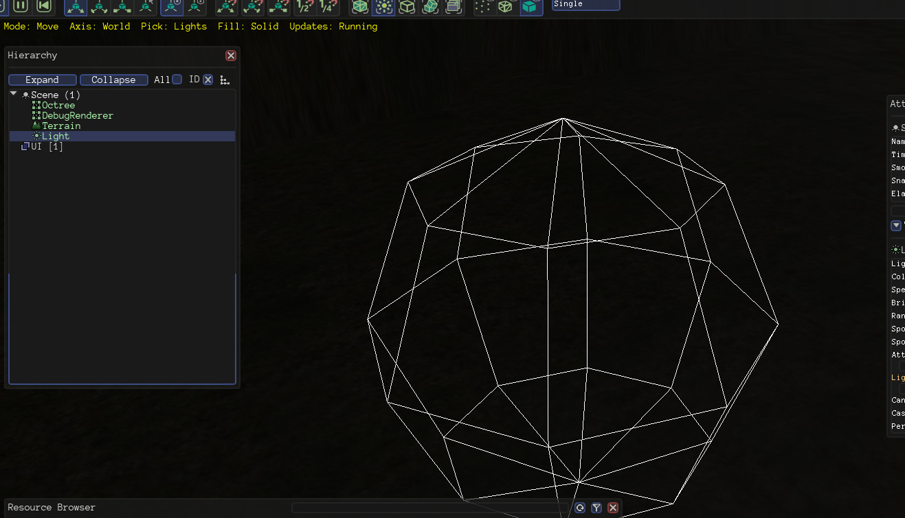

namic
This sounds stupid, but how can i select a directional light and rotate it? There’s no gizmo in the Urho Editor for lights.

This sounds stupid, but how can i select a directional light and rotate it? There’s no gizmo in the Urho Editor for lights.

Check your current selection mode (yellow text) Pick mode should be chosen as light. also you may press key 5-6 ?? circular select type of selection.
then try click on light. Mode also should be selected as rotate.
Hate to revive an old topic but I can’t get the move gizmo to show up for lights. Am I doing something wrong? I’ve sent the mode to move and the pick to lights…


First create a node, and attach the component to it.